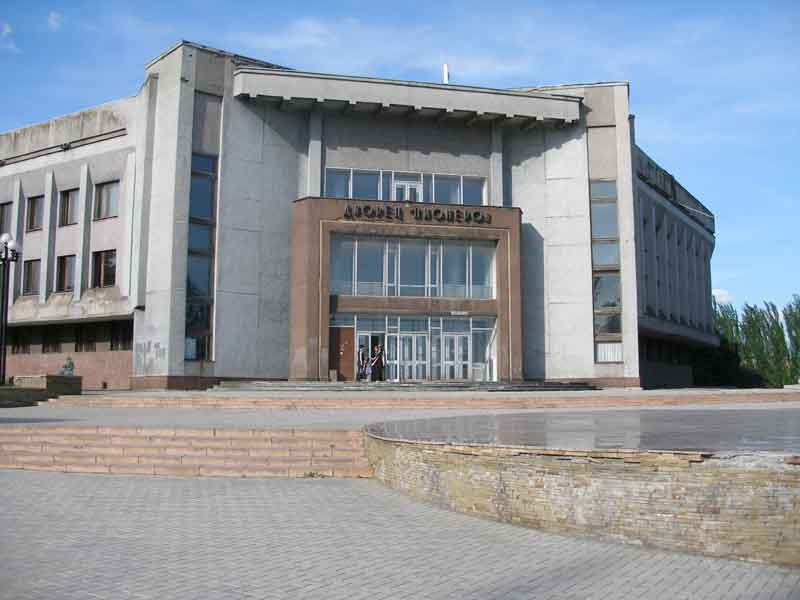
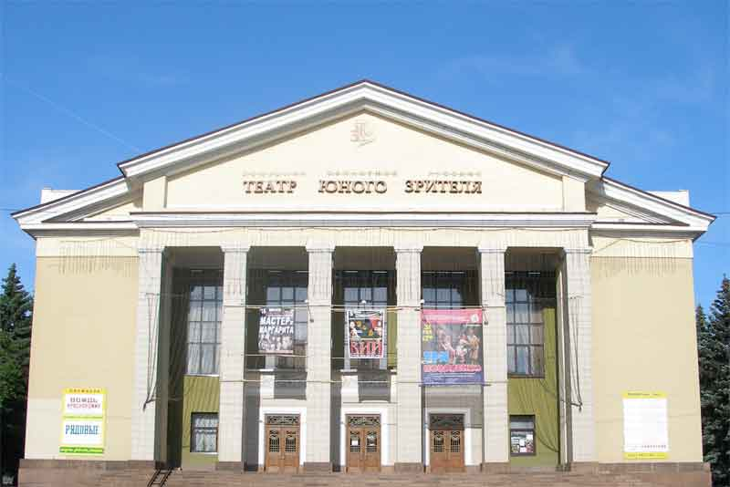
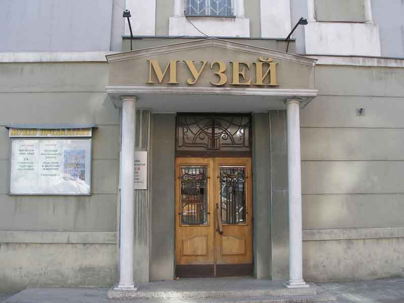
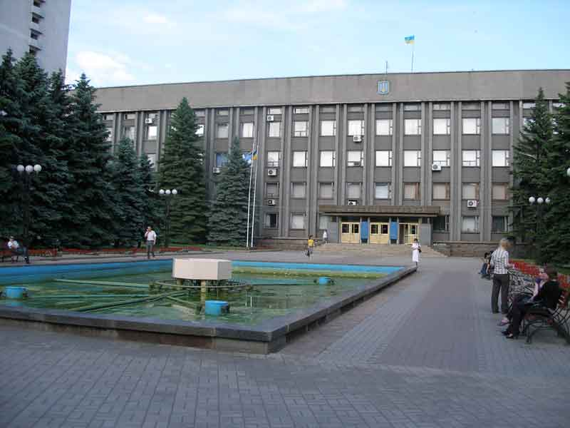
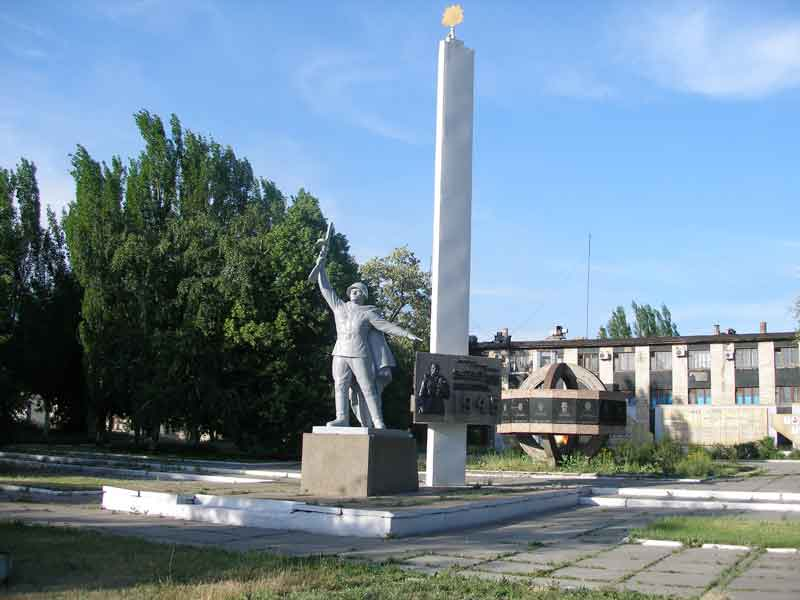
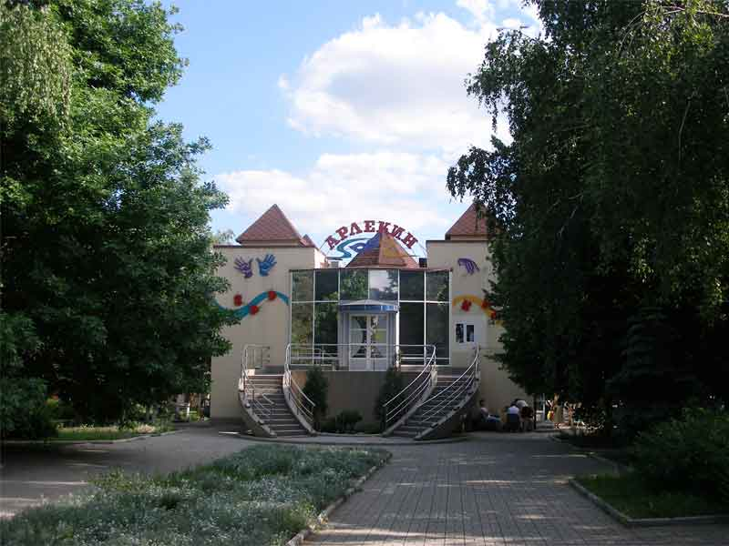

|

Дворец пионеровНаходится на ул. Московская. ПодробнееМакеевский дворец пионеров является памятником архитектуры города и базовым центром культурной и духовного жизни города. Первым директором была назначена Алентьева Клавдия Александровна В пионерском клубе создавались кружки по интересам, привлекались специалисты по профильным направлениям. В ноябре 1935 года на базе клуба торжественно был открыт городской Дом пионеров. Проводятся туристические слёты, организован клуб интернациональной дружбы, работает школа пионерского актива, уделяется много внимания военно-патриотическому воспитанию: работают поисковые отряды, создаются музейные комнаты. |

Русский областной театр юного зрителяАдрес: Макеевка, ул. Ленина, 64 ПодробнееДонецкий академический областной русский театр юного зрителя (г. Макеевка) был основан в 1971 году. девяностых годах прошлого столетия в театре появился оркестр, балетная группа. Это расширило творческие возможности коллектива, в репертуаре появились спектакли в сопровождении «живой» музыки. «Трехгрошовая опера» Б. Брехта в постановке заслуженного деятеля искусств Украины Юрия Кочевенко стала событием в театральной жизни Донбасса. В спектаклях театра режиссёрское видение воплощается в яркую форму, благодаря творческому сотрудничеству со специалистами сценографии, музыки, света. Художники Сергей Карпенко, Александр Григоров, художник по костюмам Елена Карпенко, демонстрируя зрителям своё мастерство, создавали художественный образ спектакля, в котором реализовывался замысел режиссёра, и который помогал актёрам убедительно существовать в заданных обстоятельствах. |

Макеевский художественно - краеведческий музей.Адрес: Макеевка, ул. Ленина, 51/26 ПодробнееМакеевский городской художественно-краеведческий музей был создан 20 мая 1958 года. Сперва он был филиалом Донецкого областного краеведческого музея. В 1995 году музей стал самостоятельным учреждением. Фонды музея состоят из более 30 тысяч экспонатов. Экспозиция размещена в 5 залах. В нумизматической коллекции музея хранится 3 тысячи экспонатов. Самые ценные экспонаты: ашельское рубило и каменный наконечник неандертальца. Гордостью музея является этнографическая коллекция, в состав которой входят народная земледельческая техника, орудия труда и изделия местных ремесленников, мебель, посуда, народная одежда, украшенная вышивкой и аппликацией, орнаментированные рушники и ковры. |
|

Здание Макеевского городского совета.Адрес: Макеевка, Советская площадь, 1 ПодробнееМакеевский городской совет - одна из административно-территориальных единиц в составе Донецкой области. Входит в состав Донецкой агломерации. Численность наличного населения города Макеевка по переписи населения 2001 года составила 389 589 жителей (2001); Макеевского городского совета (города с территориями, подчинёнными Макеевскому горсовету) — 432 830 жителей. (МБА). Численность наличного населения Макеевского городского совета на 1 января 2012 года — 394 600 человек, постоянного — 393 500 жителей[2]; на 1 марта 2013 года — 391 919 человек наличного населения и 390 398 постоянных жителей[3]. |

Памятник рабочим металлургического завода, погибшим в годы Великой Отечественной войныАдрес: Макеевка. Улица Кирова. ПодробнееМакеевка почувствовала на себе все ужасы немецкой оккупации. За время войны она понесла значительные потери. Всего погибло 30 тысяч мирных жителей. С фронта не вернулось около 16 тысяч офицеров и солдат. Среди погибших числилось немало рабочих Макеевского металлургического завода, который в начале войны был Металлургическим комбинатом имени Кирова. |

Кафе-бар АрлекинАдрес: Макеевка, ул. Ленина, 48 ПодробнееКафе Арлекин предлагает вам окунуться в атмосферу вкусной еды и прохладных напитков. Здесь можно быстро и недорого перекусить как в одиночестве, так и с друзьями или семьей. Заведения общепита не случайно являются неотъемлемой частью жизни современного человека. Не хотите тратить на приготовление еды драгоценное время? Нет ничего проще: найдите ресторан или кафе по душе и выберите блюдо из меню! Рейтинг кафе Арлекин на Справка.РУ - 5, однако вы можете поделиться вашим личным мнением о заведении, написав отзыв о нём, и повлиять на эту оценку. Здоровая конкуренция и неравнодушные посетители — вот две вещи, приводящие к тому, что уровень еды, которую предлагают для нас повара за деньги, становится все лучше и лучше. |